D108 · 구름 커튼빛 보완
TAA/high50%, 같은 DEM1.5×/카메라. 왼쪽 이전 기준, 오른쪽 개선 후보. 광선 ON/OFF와 지형 그림자 OFF를 별도로 확인했습니다. 품질TUNE, main 미통합.
실시간 후보 · 슬라이더 / 정역 이동 검증
진행 0.265
진행 0.285
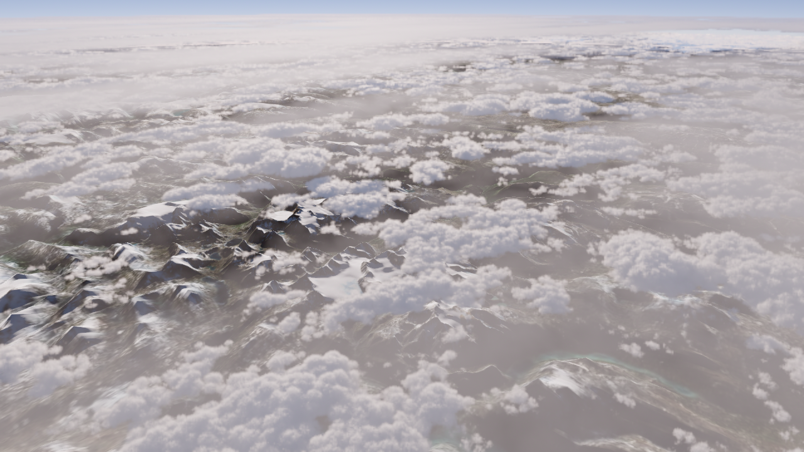
이전 기준
p0.285 · 태양16.1/43.75 · 감쇠0.001 · 두께1 · 밀도1커튼빛 후보
p0.285 · 태양15/0 · 감쇠0.00018 · 두께1.2 · 밀도1진행 0.3
진행 0.32
진행 0.345
진행 0.365
광학 단독 대조
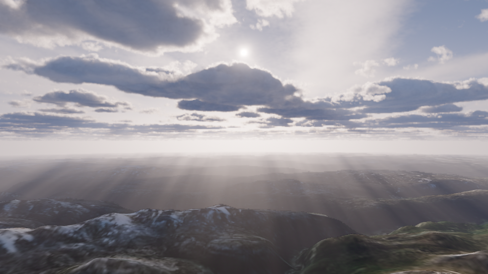
p365-x0-y0-az0-el15-h100-d10-n10-on-gs
p0.365 · 태양15/0 · 감쇠0.0001 · 두께1 · 밀도1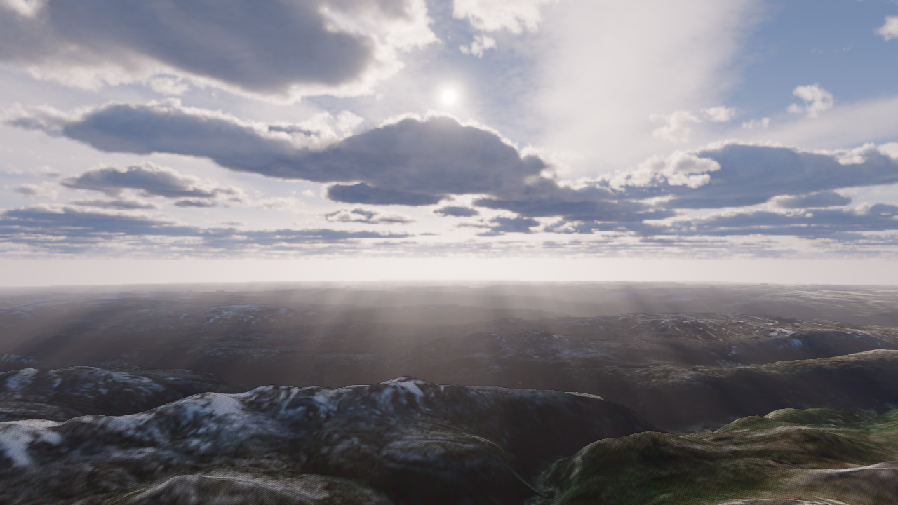
p365-x0-y0-az0-el15-h180-d10-n10-on-gs
p0.365 · 태양15/0 · 감쇠0.00018 · 두께1 · 밀도1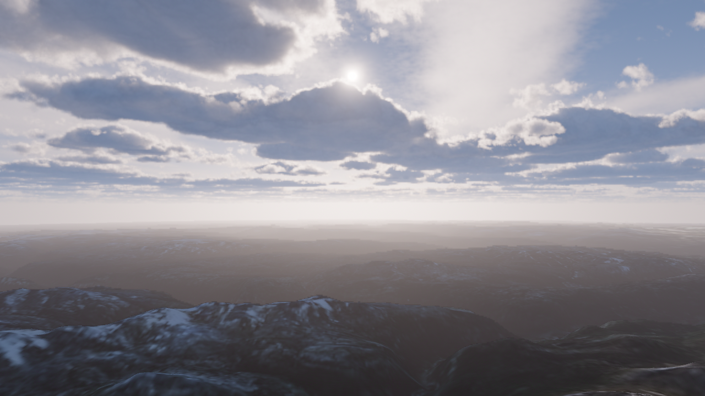
p365-x0-y0-az0-el15-h180-d12-n10-off-gs
p0.365 · 태양15/0 · 감쇠0.00018 · 두께1.2 · 밀도1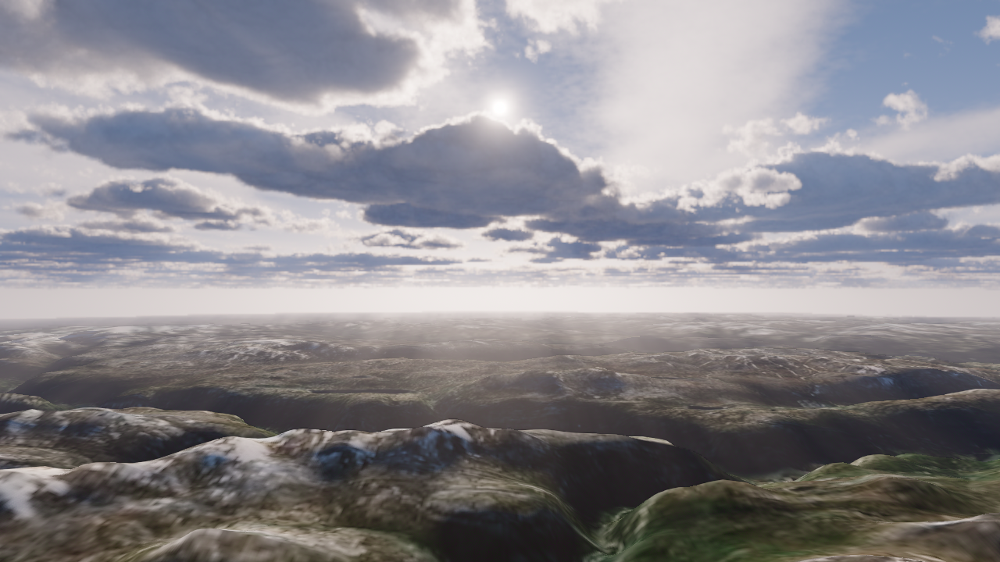
p365-x0-y0-az0-el15-h180-d12-n10-on-nogs
p0.365 · 태양15/0 · 감쇠0.00018 · 두께1.2 · 밀도1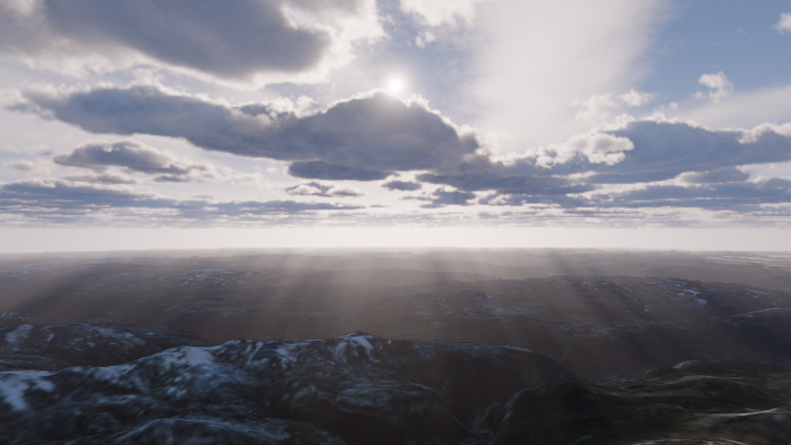
p365-x0-y0-az0-el15-h180-d12-n8-on-gs
p0.365 · 태양15/0 · 감쇠0.00018 · 두께1.2 · 밀도0.8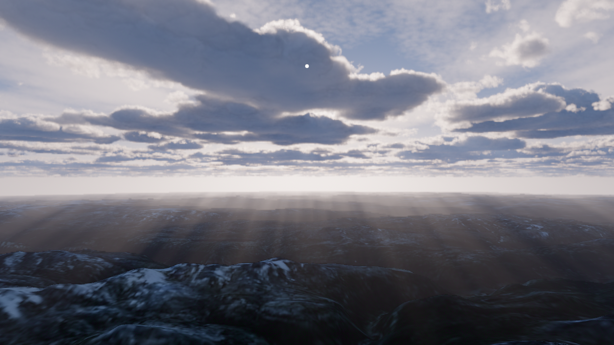
p365-x12-y10-az0-el15-h180-d12-n10-on-gs
p0.365 · 태양15/0 · 감쇠0.00018 · 두께1.2 · 밀도1연속 정역 진행 직후 프레임
진행값 자동 재생 중 촬영. 실제 마우스 휠·전체 도입부 검증이나 영상 증거와 다릅니다.
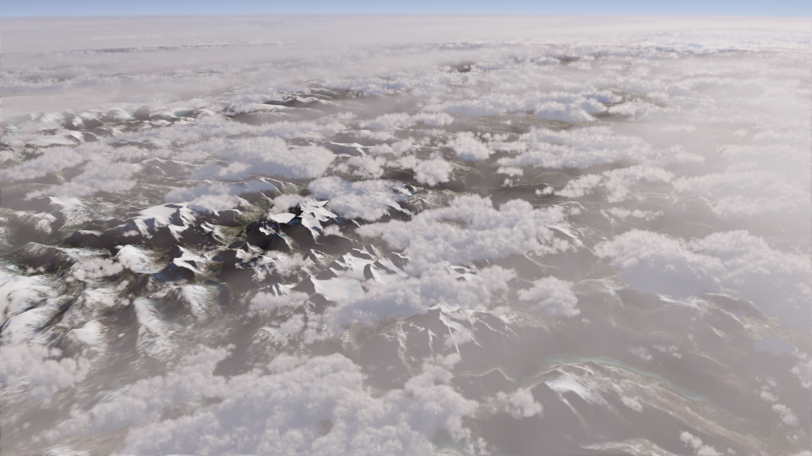
forward
p0.285 · 태양15/0 · 감쇠0.00018 · 두께1.2 · 밀도1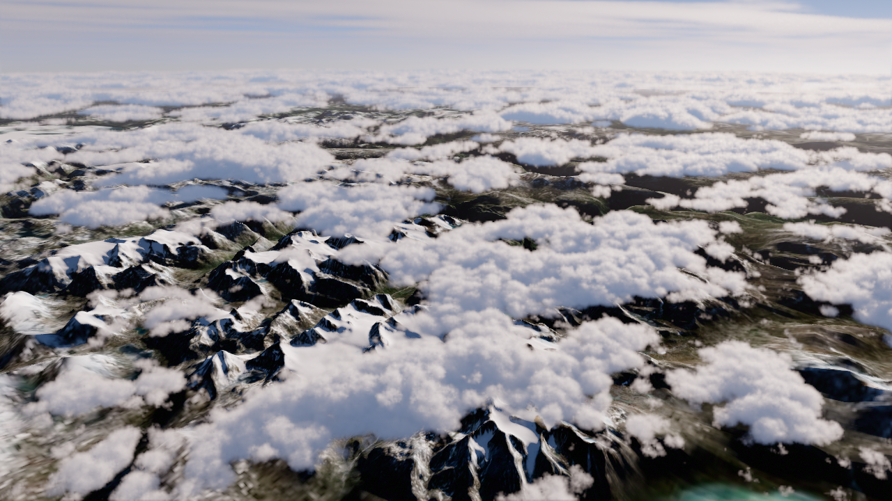
forward
p0.3 · 태양15/0 · 감쇠0.00018 · 두께1.2 · 밀도1forward
p0.345 · 태양15/0 · 감쇠0.00018 · 두께1.2 · 밀도1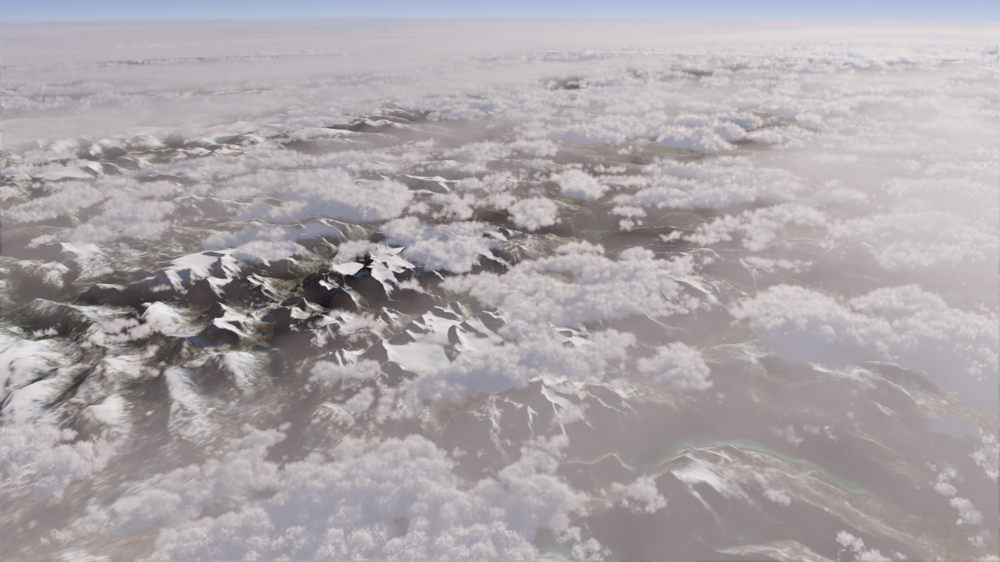
reverse
p0.285 · 태양15/0 · 감쇠0.00018 · 두께1.2 · 밀도1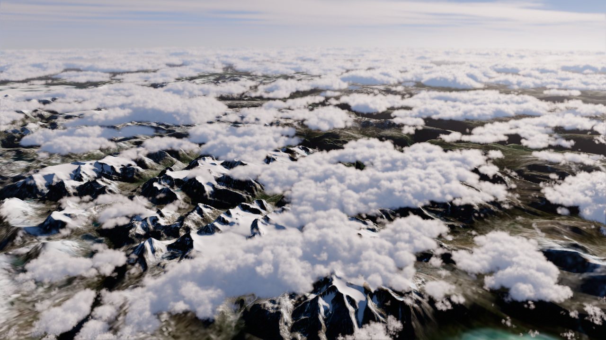
reverse
p0.3 · 태양15/0 · 감쇠0.00018 · 두께1.2 · 밀도1reverse
p0.345 · 태양15/0 · 감쇠0.00018 · 두께1.2 · 밀도1